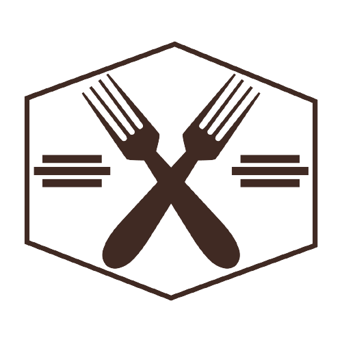
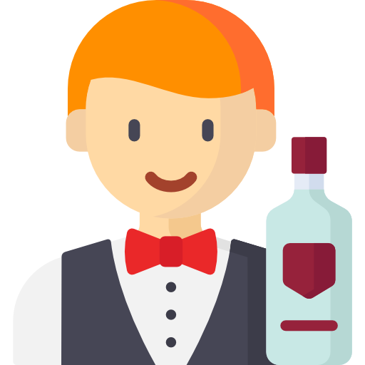

<ion-header [translucent]="true">
	<ion-toolbar>
		
		<ion-button id="btn_toolbar" (click)="CerrarSesion()">
			<ion-icon name="log-out-outline" style="transform: scaleX(-1);"></ion-icon>
		</ion-button>
	</ion-toolbar>
</ion-header>

<ion-content [fullscreen]="true">
	<ion-grid>
		<div class="contenido" *ngIf="tipo != ''">

      <div class="encabezado" *ngIf="tipo == 'Bartender'">
        
        <h2>{{tipo}}</h2>
      </div>
      
      <div class="encabezado" *ngIf="tipo == 'Cocinero'">
        
        <h2>{{tipo}}</h2>
      </div>

			<div style="margin-top: 15px;">
				<button (click)="VerPedidos()"><br><br>Ver Pedidos</button>
			</div>

      <div *ngIf="hayPedidos">
        <h2 style="margin-top: 50px; font-size: 40px;">Mostrar pedidos</h2>
      </div>

      <div *ngIf="!hayPedidos">
        <h2 style="margin-top: 50px; font-size: 40px;">No hay pedidos en proceso</h2>
      </div>

		</div>
	</ion-grid>
	<ion-fab horizontal="end" vertical="bottom" >
		<ion-fab-button size="small" (click)="ActivarDesactivarSonido()">
			<ion-icon *ngIf="volumenOn" name="volume-high-outline"></ion-icon>
			<ion-icon *ngIf="!volumenOn" name="volume-mute-outline"></ion-icon>
		</ion-fab-button>
	</ion-fab>
</ion-content>

<div class="custom-loading" *ngIf="spinner">
	<div class="spinner">
		<div class="double-bounce1"></div>
		<div class="double-bounce2"></div>
	</div>
</div>
